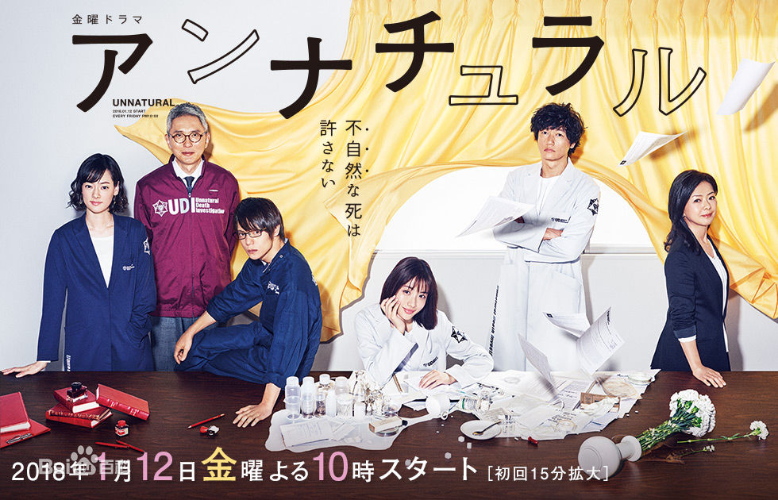

我来自湖南理工学院南湖学院
大学在一个人的一生中是一个很重要的片段，也是一个重要的分叉点,不同的选择代表的也是不同的道路，很荣幸在大学的最后一个学年与大家相识，并且一起为自己的未来而努力。
家乡
我是湖南郴州资兴人，这个地方吃喝玩乐都蛮好，东江湖的水全年都很冰而且凉的刺骨，水质很好，所以这儿的三文鱼很好吃，这儿的东江湖风景区 回龙山风景区还有高椅岭以及常盈头码头每年暑假都有很多外地人（特别是广东）来玩，以及农家乐产业比较茂盛 欢迎大家来资兴玩

兴趣爱好
我平时没事就会逛B(bilibili)D(dilidili)P(pixiv)站
也偶尔看看A(AcFun)C(tucao)站看看鬼畜找找MAD，看看动漫 追追小偶像 也看日英美剧，国产剧的话目前只看了将夜，游戏的话 玩《最终幻想14 Online》 以上这些标签再加上计算机专业，其实已经是一个合格的死宅了吧（雾
不过这些娱乐活动这一学期也都没什么时间做了，临近毕业 还是静下心再学点东西比较好，玩什么时候都可以玩。
未来打算
作为一个没什么特长，然后有不大会与人交流，然后又没有什么专业技术的理科生=
未来还是尽可能的想从事一些自己了解的行业
曾有段时间 越是临近毕业 越是慌张，不知所措，感觉毕业即等于失业，有点恐慌，然后自己让自己忧郁，不过越是在这种时候，越是要坚定自己，不去想太多，给自己定一段计划，然后认真的执行就好了，至于结果，其实有时候真的不那么重要，于是我开始了去图书馆，开始了不玩游戏，开始了每天更新几篇学习体会。
曾非常喜欢一首歌的一句歌词
求めてた日々はこんなモンだっけ?
一直想要的生活就这种程度？
希望大家最后都能过上自己想要的生活。